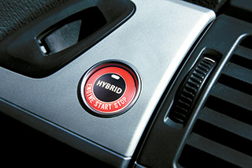

Kiveteles minoseg



Gyozodjon meg szemelyesen is a reszletgazdag, blablabla gyartasunk fantasztikus mert jok vagyunk na. Es a nyomtato meg egy alom.
A Roland LEF-20 nyomtatóhoz CMYK, fehér és átlátszó lakk használható. A fehér festék kitűnő nyomatokat eredményez színes és átlátszó tárgyakon is. A festéket átlátszatlan alapbevonatként is használhatja, hogy ezzel más színeket kiemeljen. Az átlátszó lakk különleges matt, fényes és domborhatások létrehozására használható. Így például nyomtathat Braille-írással is, de akár domború geometriai mintázatokat, melyeket utána tapintani lehet.
Az integrált UV-LED lámpa azonnal megszárítja a festéket. Így a nyomtatott tárgyakat azonnal használhatja, vagy további megmunkálásnak vetheti alá. Hőre, érzékeny anyagokra és tárgyakra is gond nélkül nyomtathat.
Amellett, hogy az előző típusokhoz képestb kibővült a nyomtatási területe (508 mm * 330 mm), egy erőteljesebb UV-LED lámpa került kifejlesztésre, ami jelentősen megnöveli a termelékenységet, és ezáltal az Ön profitját.
Gyozodjon meg szemelyesen is a reszletgazdag, blablabla gyartasunk fantasztikus mert jok vagyunk na. Es a nyomtato meg egy alom.
| Technológia | Piezoelelektromos inkjet UV | |
| Tárgy paraméterek | Méret | Maximum 538 (szé) x 360 (mé) x 100 (ma) mm |
| Tömeg | Maximum 5 kg | |
| Nyomtatási méret | Maximum 508 x 330 x 100 mm | |
| Nyomtatási felbontás | Maximum 1440 dpi | |
| Nyomtatási pontosság | ±0.3 mm | |
| Festékkazetták | Típus | Roland ECO-UV3 INK |
| Űrtartalom | 220 ml | |
| Színek | Cyan, Magenta, Yellow, Black, White, Lakk | |
| ECO-UV festékkazetták | |
| EUV3-MG | Magenta, 220cc |
| EUV3-YE | Sárga, 220cc |
| EUV3-CY | Cián, 220cc |
| EUV3-BK | Fekete, 220cc |
| EUV3-WH | Fehér, 220cc |
| EUV3-GL | Lakk, 220cc |
| SL-CL | Tisztító kazetta, 220cc |
| Gépasztal beépített légtisztító/szűrő berendezéssel | |
| Print Pro Base LEF-20 | |